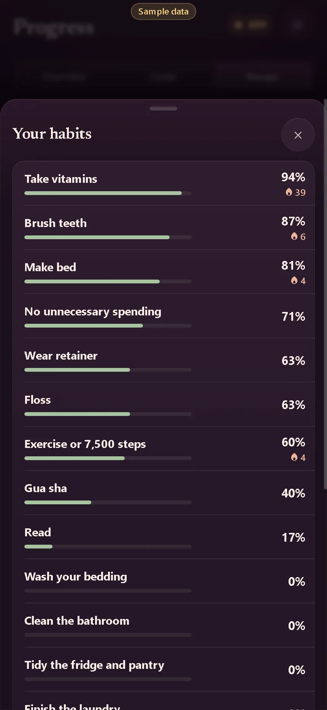

Progress · all habits: consistency and streaks
- Area
- Progress
- Screen 23 of 65
- progress-all-habits
- Capture
- visible screen (430×932), demo time 15:00, sample data
- Image
- img/23-progress-all-habits.webp

Text on this screen
Progress Your habits Take vitamins 94% 39 Brush teeth 87% 6 Make bed 81% 4 No unnecessary spending 71% Wear retainer 63% Floss 63% Exercise or 7,500 steps 60% 4 Gua sha 40% Read 17% Wash your bedding 0% Clean the bathroom 0% Tidy the fridge and pantry 0% Finish the laundry 0% Prepare weekly vitamins and medications 0% Take a yoga class 0% Clean the car 0% Complete 2 runs this week 0% Bonus: Complete a 5K run 0% No history yet: Brush teeth, Shower, Stretch, Prep for tomorrow, Journal, Make a meal. Consistency is the share of scheduled days you did it, over the last 30 days (weekly habits: recent weeks). Rest days, skips and pauses don't count against you.